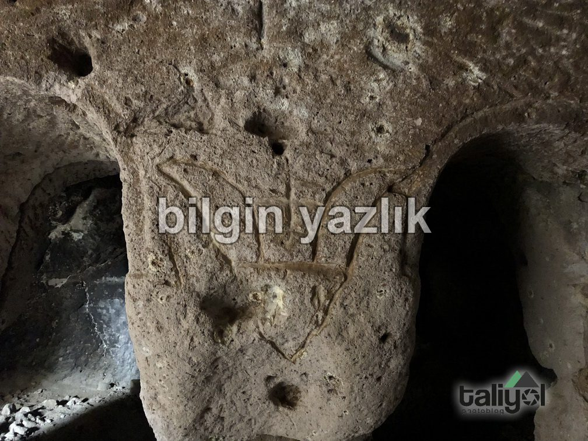
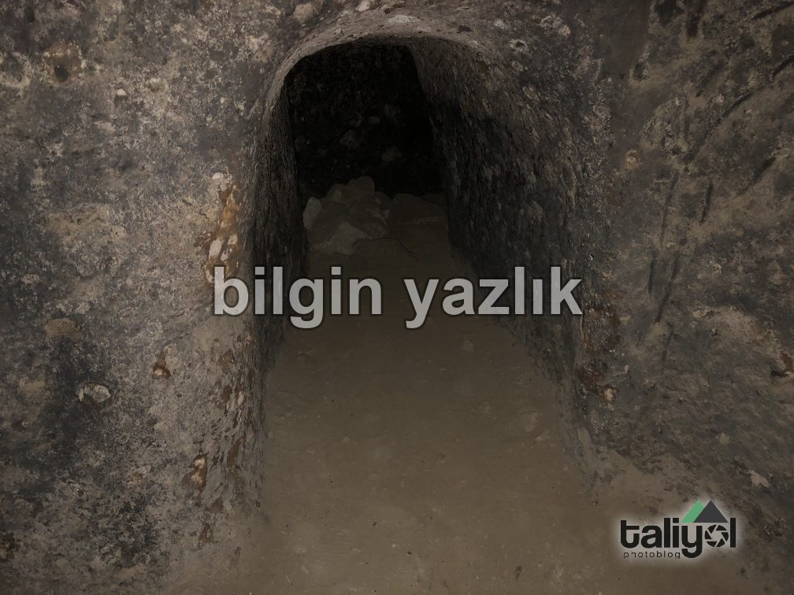
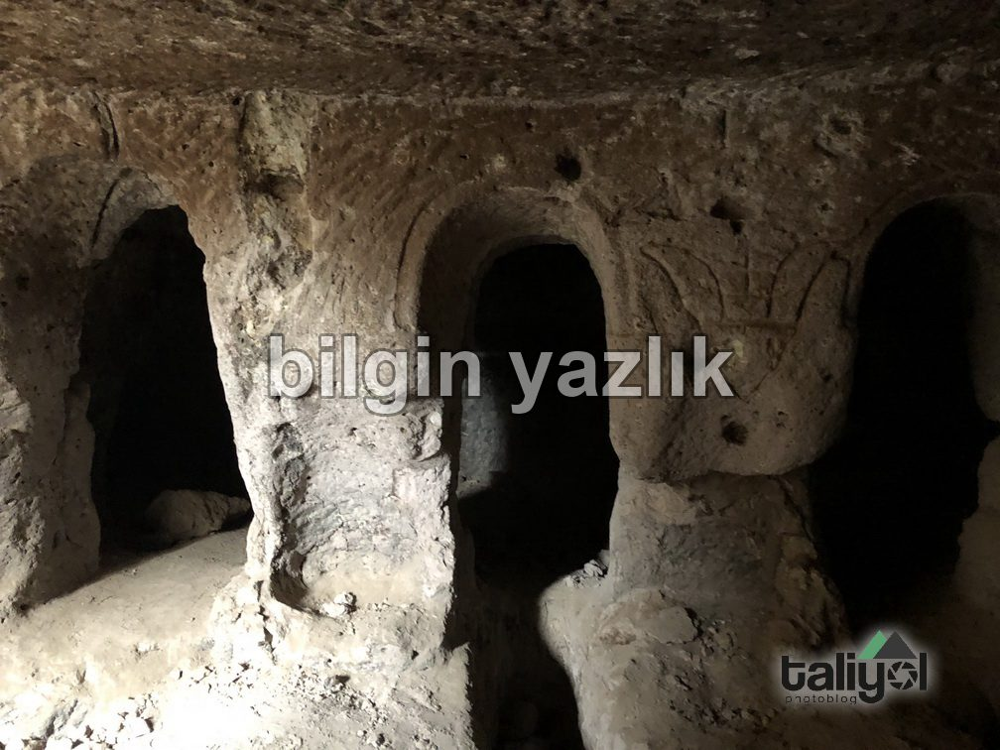
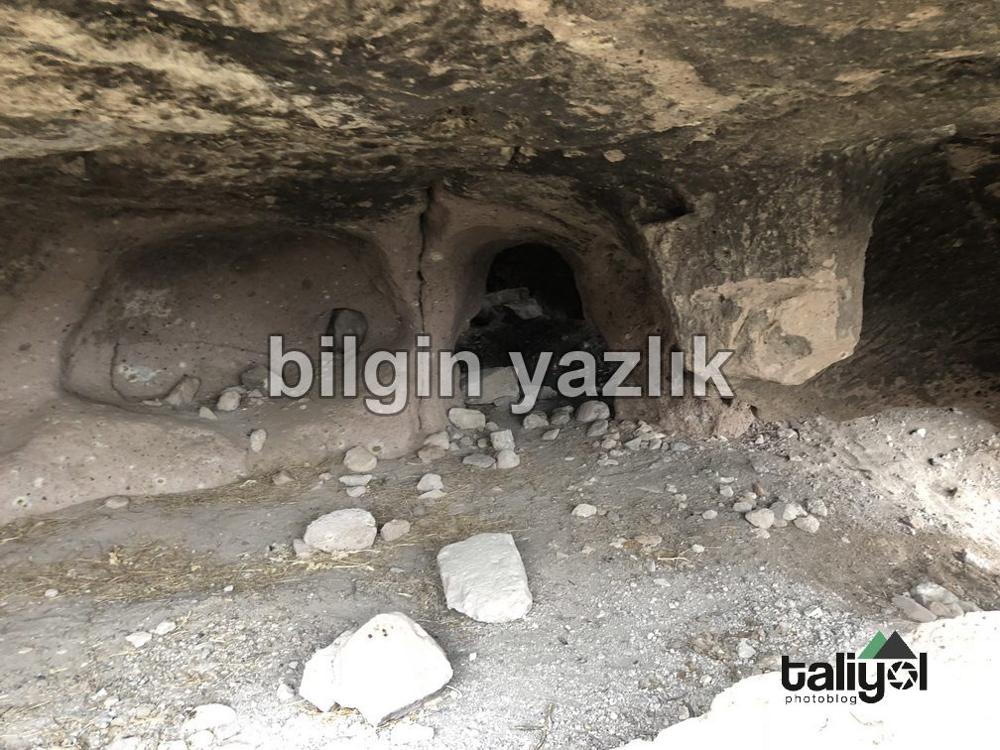
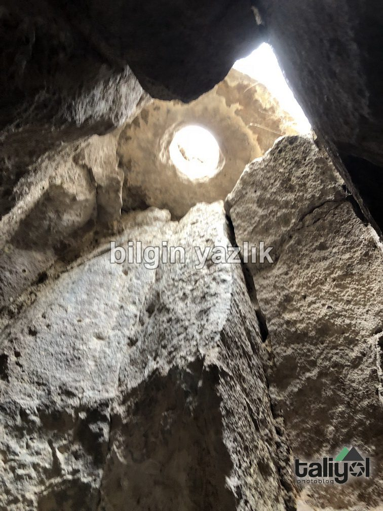
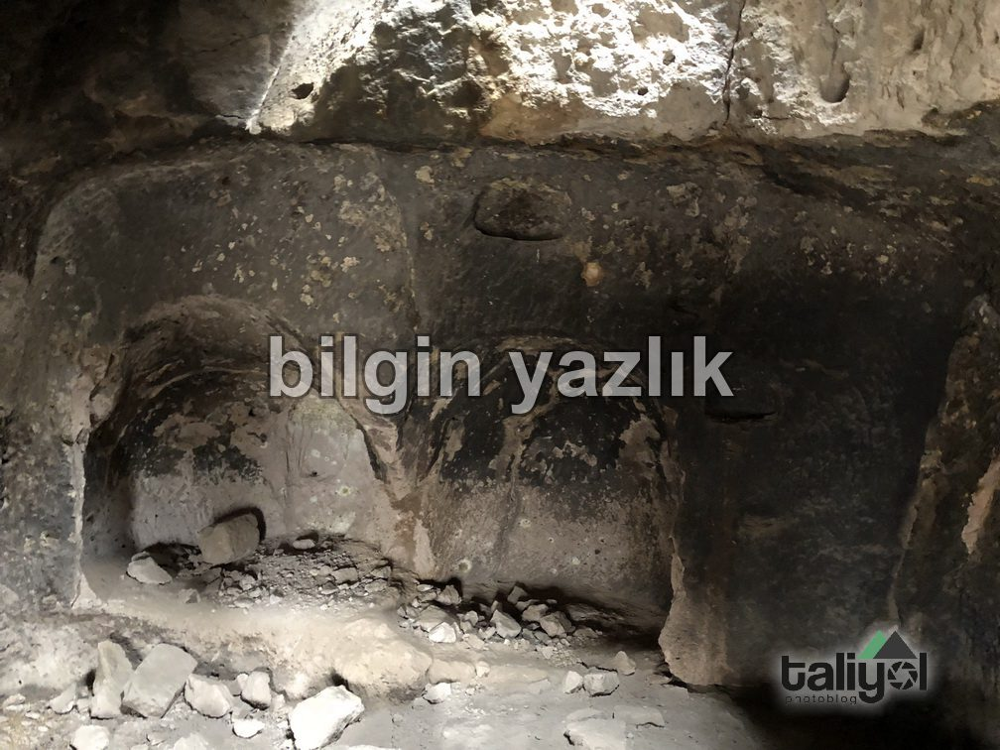

Kayseri & Koramaz · 10 Şubat 2018
Küçük Bürüngüz Savunma Mağarası
Kayseri’nin Küçük Bürüngüz köyü sınırları içerisinde yer alan bu yapı aynı zamanda Koramaz Vadisi envanterinde yer almaktadır. Çok sayıda odaya ve tünellere sahip olan yapının içindeki tünellerin ağzında ise kilit taşı (tırhız) yer almaktadır. Yapının içerisinde ayrıca üç kemerli bir oda bulunmaktadır. Odaların zeminlerinde tahıl depoları yer almaktadır ve yapının büyük kısmı çökmüş haldedir. Yapıya yakın çok sayıda columbarium da burada yer almaktadır.






Bu yazı taliyol arşivinden taşınmıştır. · özgün kayıt